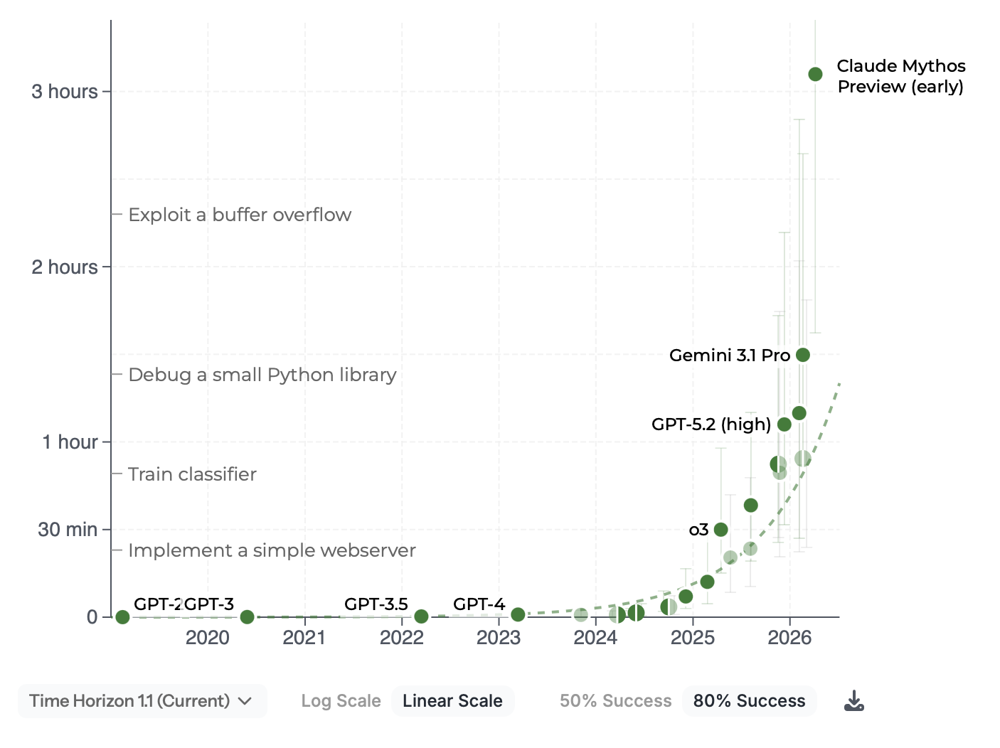
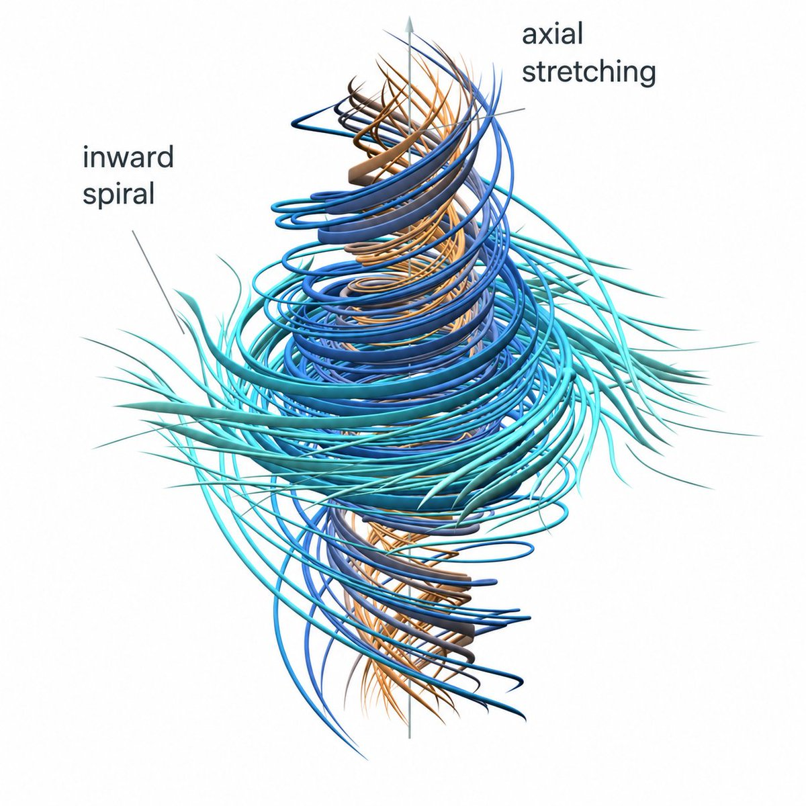

Pneumoconiosis of Intelligence
Matt Cecchini, MD
Workload pressures
Basecamp | The signal
Something remarkable is happening
Length of task an AI system can complete has been doubling roughly every seven months.

METR
The signal | mathematics
A 90-year problem. A new frontier.

Navier–Stokes
OpenAI reports an AI-generated solution.
88hours
~10,000coordinating AI agents
The signal | mathematics
722
mathematical manuscripts
372 families · from ~4,000 problems posed to an internal OpenAI model
github.com/openai/math · New Scientist, 7 Oct 2026 · Scientific American, 6 Oct 2026
Interaction | eye gaze
Counting with eye gaze
Look. Select. Count.
Interaction | gaze + dictation
Eye tracking + dictation
Capture what I see and what I say.
Interaction | ViewMaster
ViewMaster
From a finding back to the field.
Recorded gaze
Perception | mitosis
Classifying mitotic figures
Minimal-prompt agreement with consensus
Foundation | models
Pathology foundation models
Virchow · Nature Medicine, 2024 · Diagram and numbers illustrativeFoundation | the lung slide
Read with context.
Astra preview concept · a pre-analyzed lung case
7,809 tiles · 12 clusters
DRAFT · pathologist review required
Embeddings | UMAP
Let the model organise the slide
7,809 tiles. 12 clusters.
Loading slide…
Triage | FROST
In-line AI screening on the scanner
FROST · frozen-section screening · 97 cases · 331 slides · Josh Del Papa
Triage | biomarkers
AI triage with pre-emptive biomarker ordering
Each exit is a lab-developed test, validated locally, with a pathologist confirming the diagnosis.
Jev | System One
System One models: Jev
70–500 msJev · per decision
3–329 sfrontier models
vendor-reported
Chronic active gastritis on H&E. Order a Warthin-Starry?
TypeSafe AI. Introducing System One models and Jev. Sep 26, 2026 · Vendor-reported figures · Race timing illustrative
Jev | live
Jev, live: describe a cell
typesafe-ai/jev via Vercel AI Gateway · one choice question over 52 cell types plus tissue family · Esc returns the arrow keys to the deck
open live demo ↗Jev | navigation
Jev drives the slide
Sentinel lymph node at 10× · rim first, then interior · Jev sees optical density only, never pixels
CAMELYON16 tumor_091 · H&E OD sensor, 128 × 112 cells of 109 µm · typesafe-ai/jev via AI Gateway · research demo, not a diagnosis
open live demo ↗Thank you
Questions
Matt Cecchini, MD